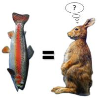

Главная причина появления денег – обмен товаров
Появление денег связано с возникновением необходимости постоянного обмена результатами труда в последствии потребностей социума. Обществу нужен был универсальный эквивалент в виде некоторых товаров-предметов для обмена. Начальная стадия – товар, на втором этапе – золото, третий этап ознаменовался переходом к бумажным или кредитным деньгам. Современный этап функционирования денежной валюты в социуме - постепенное вытеснение необходимости в наличных деньгах электронными видами платежей из оборота. Причины появления денег можно связать с их первородным значением: как сущность обмениваемая; как явление с самостоятельной меновой стоимостью; как материализованную меру труда. Деньги - это «обменный товар на иной товар». К ряду причин возникновения универсальных платежных средств относят: удобство в обращении, а в связи с этим общественное признание, неразменность ( в сравнении с золотом), возможность покрытия дефицита с необязательным золотым эквивалентом, некая связанность. Основную причину возникновения денег следует считать постоянное стремление человеческого общества к упрощению и максимальной комфортизации своего функционирования. На сегодняшнем этапе сделки купли продажи усовершенствуются современными деньгами не прекращается и набирает новых оборотов. Кредитные отношения становятся причиной поиска существования новых денежных форм.Деньги появились по причине неудобной работы системы бартер.

С появлением денег связана причина неудобного использования бартера. При бартере почти невозможно найти общую объективную меру ценности того, чем обмениваются. Это можно объяснить отсутствием эталона обмена для бартера. Кроме того, в большинстве случаев не всем участникам бартерного обмена подходит предлагаемый товар ( или вообще нужен!?). В народе о таком виде расчета сказано довольно четко: «обмен шила на мыло» либо «меняйло без штанов ходит». Доля правды здесь несомненно есть. Следующей простой причиной является довольно простой факт: очень мало есть предметов долгосрочного хранения либо тех, которые со временем не теряют свою первоначальную ценность. К причинам появлению денежных знаков относят необходимость обмена товарами и выполнение всевозможных платежей, определения ценности товаров и сохранения ценности с помощью универсального средства. Деньги меньше всего подвержены порче, не могут добываться в природной среде ((не лежат под ногами), а значит – ценны), компактны, имеют свойство делиться на части, труднее всего подделываются (спорно!). Денежный капитал является причиной перехода от натурального хозяйства к товарному производству на основе общественного разделения труда. С помощью платежных средств строятся отношения между людьми. Члены общества могут с легкостью составлять обменные пропорции при условии определения общего эквивалента. На основании этого базируется понятие «цены», а также понятие «относительная ценность». Их взаимозависимость очевидна. Деньги - особый товар, эталон, шкала выражения стоимости всех других товаров.Появились электронные деньги, они более безопасны и удобны.
Не следует недооценивать электронных денежных единиц. "Цифровые деньги", смарт-карты - карточки с компьютерным чипом, на которой записана информация о балансе денежных средств на счете. Этот тип карты защищен персональным кодом. Вот основная причина удобства и широкого распространения электронных денег. Более того, эта особенность препятствует воровству, в сравнении с обычными деньгами. Персонализация "цифровых денег" повышает уровень безопасности такой валюты, а тем самым – повышает спрос и распространение. Подводя итоги, можно с уверенностью сказать, что появление и распространение валюты не ведет к повышению потребления товаров и услуг в социуме. Продукт потребления - это результат совокупности и взаимопроникновенности трех факторов: труда, земли и капитала. Несомненно, что возникновение универсального платежного средства имеет исключительно положительные «последствия». Функции денежного капитала ведут к определенным пользам:сокращению издержек,
уменьшению количества затраченного времени для нахождения партнера,
способствует специализации трудовых сегментов,
в некой мере способствует развитию креативности в социуме.
Деньги это хороший инструмент, который улучшает качество жизни. Сами по себе они не несут никакого вреда. Важно, в чьих руках находится инструмент, что им делают хорошие или плохие дела!